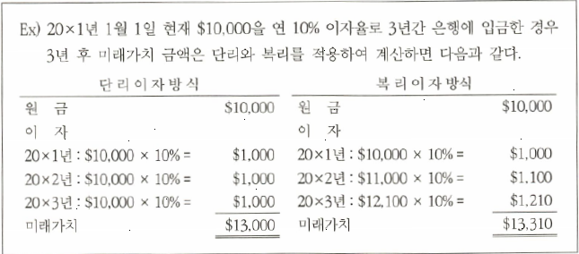

화폐의 시간가치
화폐의 시간가치 = 미래 명목상의 현금액과 현재가치의 차이 = 이자 = 채권/채무의 현재가치할인차금
복리이자 - 미래가치를 계산할 때 원금뿐만 아니라 이미 발생한 이자에 대해서도 이자를 계산하는 방식

현금의 미래가치
현재시점의 일정금액을 미래시점의 일정한 금액으로 환산한 가치

연금의 미래가치
연금 (annuity)이란 일정기간 동안 동일한 금액을 동일한 시점에 계속적으로 지급하는 것을 말한다. 연금의 미래가치는 매기말에 동일한 금액을 지급할 때 최종기간의 종료시점에서 미래가치 총액을 말한다.

미래 현금흐름의 현재가치
현재가치(present value)란 미래에 발생하게 될 현금흐름을 현재시점의 금액으로 할인한 가치를 말한다.
미래시점의 가치와 현재시점의 가치를 일치시키는 이자율을 바로 내재이자율 (internal rate of interest) 또는 유효이자율 (effective interest rate)이라고 한다.


연금의 현재가치
연금의 현재가치란 매년 미래시점의 일정금액의 현금흐름액을 현재가치로 할인하여 환산한 금액의 합계이다.

장기채권이나 장기채무는 재무제표를 작성할 때 현재가치로 표시하는 것이 원칙